pylayers.signal.EnergyDetector module¶
- class pylayers.signal.EnergyDetector.DF(b=array([1]), a=array([1]))[source]¶
Bases: object
Digital Filter Class
- class pylayers.signal.EnergyDetector.EnergyDetector(filter1, beta, filter2, pfa)[source]¶
Bases: object
EnergyDetector Class
This class implements an Energy Detector object
PROVIDED METHODS
- pylayers.signal.EnergyDetector.beta(a, b, size=None)¶
The Beta distribution over [0, 1].
The Beta distribution is a special case of the Dirichlet distribution, and is related to the Gamma distribution. It has the probability distribution function
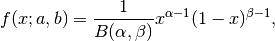
where the normalisation, B, is the beta function,
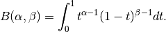
It is often seen in Bayesian inference and order statistics.
Parameters: a : float
Alpha, non-negative.
b : float
Beta, non-negative.
size : tuple of ints, optional
The number of samples to draw. The output is packed according to the size given.
Returns: out : ndarray
Array of the given shape, containing values drawn from a Beta distribution.
- pylayers.signal.EnergyDetector.binomial(n, p, size=None)¶
Draw samples from a binomial distribution.
Samples are drawn from a Binomial distribution with specified parameters, n trials and p probability of success where n an integer >= 0 and p is in the interval [0,1]. (n may be input as a float, but it is truncated to an integer in use)
Parameters: n : float (but truncated to an integer)
parameter, >= 0.
p : float
parameter, >= 0 and <=1.
size : {tuple, int}
Output shape. If the given shape is, e.g., (m, n, k), then m * n * k samples are drawn.
Returns: samples : {ndarray, scalar}
where the values are all integers in [0, n].
See also
- scipy.stats.distributions.binom
- probability density function, distribution or cumulative density function, etc.
Notes
The probability density for the Binomial distribution is

where
 is the number of trials,
is the number of trials,  is the probability
of success, and
is the probability
of success, and  is the number of successes.
is the number of successes.When estimating the standard error of a proportion in a population by using a random sample, the normal distribution works well unless the product p*n <=5, where p = population proportion estimate, and n = number of samples, in which case the binomial distribution is used instead. For example, a sample of 15 people shows 4 who are left handed, and 11 who are right handed. Then p = 4/15 = 27%. 0.27*15 = 4, so the binomial distribution should be used in this case.
References
[113] Dalgaard, Peter, “Introductory Statistics with R”, Springer-Verlag, 2002. [114] Glantz, Stanton A. “Primer of Biostatistics.”, McGraw-Hill, Fifth Edition, 2002. [115] Lentner, Marvin, “Elementary Applied Statistics”, Bogden and Quigley, 1972. [116] Weisstein, Eric W. “Binomial Distribution.” From MathWorld–A Wolfram Web Resource. http://mathworld.wolfram.com/BinomialDistribution.html [117] Wikipedia, “Binomial-distribution”, http://en.wikipedia.org/wiki/Binomial_distribution Examples
Draw samples from the distribution:
>>> n, p = 10, .5 # number of trials, probability of each trial >>> s = np.random.binomial(n, p, 1000) # result of flipping a coin 10 times, tested 1000 times.
A real world example. A company drills 9 wild-cat oil exploration wells, each with an estimated probability of success of 0.1. All nine wells fail. What is the probability of that happening?
Let’s do 20,000 trials of the model, and count the number that generate zero positive results.
>>> sum(np.random.binomial(9,0.1,20000)==0)/20000. answer = 0.38885, or 38%.
- pylayers.signal.EnergyDetector.chisquare(df, size=None)¶
Draw samples from a chi-square distribution.
When df independent random variables, each with standard normal distributions (mean 0, variance 1), are squared and summed, the resulting distribution is chi-square (see Notes). This distribution is often used in hypothesis testing.
Parameters: df : int
Number of degrees of freedom.
size : tuple of ints, int, optional
Size of the returned array. By default, a scalar is returned.
Returns: output : ndarray
Samples drawn from the distribution, packed in a size-shaped array.
Raises: ValueError :
When df <= 0 or when an inappropriate size (e.g. size=-1) is given.
Notes
The variable obtained by summing the squares of df independent, standard normally distributed random variables:
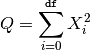
is chi-square distributed, denoted

The probability density function of the chi-squared distribution is
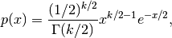
where 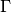 is the gamma function,
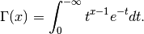
References
NIST/SEMATECH e-Handbook of Statistical Methods
Examples
>>> np.random.chisquare(2,4) array([ 1.89920014, 9.00867716, 3.13710533, 5.62318272])
- pylayers.signal.EnergyDetector.exponential(scale=1.0, size=None)¶
Exponential distribution.
Its probability density function is
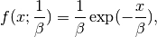
for x > 0 and 0 elsewhere.
 is the scale parameter,
which is the inverse of the rate parameter 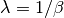.
The rate parameter is an alternative, widely used parameterization
of the exponential distribution [120].
is the scale parameter,
which is the inverse of the rate parameter 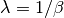.
The rate parameter is an alternative, widely used parameterization
of the exponential distribution [120].The exponential distribution is a continuous analogue of the geometric distribution. It describes many common situations, such as the size of raindrops measured over many rainstorms [118], or the time between page requests to Wikipedia [119].
Parameters: scale : float
The scale parameter, 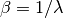.
size : tuple of ints
Number of samples to draw. The output is shaped according to size.
References
[118] Peyton Z. Peebles Jr., “Probability, Random Variables and Random Signal Principles”, 4th ed, 2001, p. 57. [119] “Poisson Process”, Wikipedia, http://en.wikipedia.org/wiki/Poisson_process [120] “Exponential Distribution, Wikipedia, http://en.wikipedia.org/wiki/Exponential_distribution
- pylayers.signal.EnergyDetector.f(dfnum, dfden, size=None)¶
Draw samples from a F distribution.
Samples are drawn from an F distribution with specified parameters, dfnum (degrees of freedom in numerator) and dfden (degrees of freedom in denominator), where both parameters should be greater than zero.
The random variate of the F distribution (also known as the Fisher distribution) is a continuous probability distribution that arises in ANOVA tests, and is the ratio of two chi-square variates.
Parameters: dfnum : float
Degrees of freedom in numerator. Should be greater than zero.
dfden : float
Degrees of freedom in denominator. Should be greater than zero.
size : {tuple, int}, optional
Output shape. If the given shape is, e.g., (m, n, k), then m * n * k samples are drawn. By default only one sample is returned.
Returns: samples : {ndarray, scalar}
Samples from the Fisher distribution.
See also
- scipy.stats.distributions.f
- probability density function, distribution or cumulative density function, etc.
Notes
The F statistic is used to compare in-group variances to between-group variances. Calculating the distribution depends on the sampling, and so it is a function of the respective degrees of freedom in the problem. The variable dfnum is the number of samples minus one, the between-groups degrees of freedom, while dfden is the within-groups degrees of freedom, the sum of the number of samples in each group minus the number of groups.
References
[121] Glantz, Stanton A. “Primer of Biostatistics.”, McGraw-Hill, Fifth Edition, 2002. [122] Wikipedia, “F-distribution”, http://en.wikipedia.org/wiki/F-distribution Examples
An example from Glantz[1], pp 47-40. Two groups, children of diabetics (25 people) and children from people without diabetes (25 controls). Fasting blood glucose was measured, case group had a mean value of 86.1, controls had a mean value of 82.2. Standard deviations were 2.09 and 2.49 respectively. Are these data consistent with the null hypothesis that the parents diabetic status does not affect their children’s blood glucose levels? Calculating the F statistic from the data gives a value of 36.01.
Draw samples from the distribution:
>>> dfnum = 1. # between group degrees of freedom >>> dfden = 48. # within groups degrees of freedom >>> s = np.random.f(dfnum, dfden, 1000)
The lower bound for the top 1% of the samples is :
>>> sort(s)[-10] 7.61988120985
So there is about a 1% chance that the F statistic will exceed 7.62, the measured value is 36, so the null hypothesis is rejected at the 1% level.
- pylayers.signal.EnergyDetector.gamma(shape, scale=1.0, size=None)¶
Draw samples from a Gamma distribution.
Samples are drawn from a Gamma distribution with specified parameters, shape (sometimes designated “k”) and scale (sometimes designated “theta”), where both parameters are > 0.
Parameters: shape : scalar > 0
The shape of the gamma distribution.
scale : scalar > 0, optional
The scale of the gamma distribution. Default is equal to 1.
size : shape_tuple, optional
Output shape. If the given shape is, e.g., (m, n, k), then m * n * k samples are drawn.
Returns: out : ndarray, float
Returns one sample unless size parameter is specified.
See also
- scipy.stats.distributions.gamma
- probability density function, distribution or cumulative density function, etc.
Notes
The probability density for the Gamma distribution is
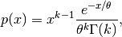
where
 is the shape and
is the shape and  the scale,
and is the Gamma function.
the scale,
and is the Gamma function.The Gamma distribution is often used to model the times to failure of electronic components, and arises naturally in processes for which the waiting times between Poisson distributed events are relevant.
References
[123] Weisstein, Eric W. “Gamma Distribution.” From MathWorld–A Wolfram Web Resource. http://mathworld.wolfram.com/GammaDistribution.html [124] Wikipedia, “Gamma-distribution”, http://en.wikipedia.org/wiki/Gamma-distribution Examples
Draw samples from the distribution:
>>> shape, scale = 2., 2. # mean and dispersion >>> s = np.random.gamma(shape, scale, 1000)
Display the histogram of the samples, along with the probability density function:
>>> import matplotlib.pyplot as plt >>> import scipy.special as sps >>> count, bins, ignored = plt.hist(s, 50, normed=True) >>> y = bins**(shape-1)*(np.exp(-bins/scale) / ... (sps.gamma(shape)*scale**shape)) >>> plt.plot(bins, y, linewidth=2, color='r') >>> plt.show()
- pylayers.signal.EnergyDetector.geometric(p, size=None)¶
Draw samples from the geometric distribution.
Bernoulli trials are experiments with one of two outcomes: success or failure (an example of such an experiment is flipping a coin). The geometric distribution models the number of trials that must be run in order to achieve success. It is therefore supported on the positive integers, k = 1, 2, ....
The probability mass function of the geometric distribution is
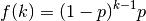
where p is the probability of success of an individual trial.
Parameters: p : float
The probability of success of an individual trial.
size : tuple of ints
Number of values to draw from the distribution. The output is shaped according to size.
Returns: out : ndarray
Samples from the geometric distribution, shaped according to size.
Examples
Draw ten thousand values from the geometric distribution, with the probability of an individual success equal to 0.35:
>>> z = np.random.geometric(p=0.35, size=10000)
How many trials succeeded after a single run?
>>> (z == 1).sum() / 10000. 0.34889999999999999 #random
- pylayers.signal.EnergyDetector.get_state()¶
Return a tuple representing the internal state of the generator.
For more details, see set_state.
Returns: out : tuple(str, ndarray of 624 uints, int, int, float)
The returned tuple has the following items:
- the string ‘MT19937’.
- a 1-D array of 624 unsigned integer keys.
- an integer pos.
- an integer has_gauss.
- a float cached_gaussian.
See also
Notes
set_state and get_state are not needed to work with any of the random distributions in NumPy. If the internal state is manually altered, the user should know exactly what he/she is doing.
- pylayers.signal.EnergyDetector.gumbel(loc=0.0, scale=1.0, size=None)¶
Gumbel distribution.
Draw samples from a Gumbel distribution with specified location and scale. For more information on the Gumbel distribution, see Notes and References below.
Parameters: loc : float
The location of the mode of the distribution.
scale : float
The scale parameter of the distribution.
size : tuple of ints
Output shape. If the given shape is, e.g., (m, n, k), then m * n * k samples are drawn.
Returns: out : ndarray
The samples
See also
scipy.stats.gumbel_l, scipy.stats.gumbel_r
- scipy.stats.genextreme
- probability density function, distribution, or cumulative density function, etc. for each of the above
Notes
The Gumbel (or Smallest Extreme Value (SEV) or the Smallest Extreme Value Type I) distribution is one of a class of Generalized Extreme Value (GEV) distributions used in modeling extreme value problems. The Gumbel is a special case of the Extreme Value Type I distribution for maximums from distributions with “exponential-like” tails.
The probability density for the Gumbel distribution is
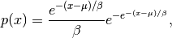
where
 is the mode, a location parameter, and is
the scale parameter.
is the mode, a location parameter, and is
the scale parameter.The Gumbel (named for German mathematician Emil Julius Gumbel) was used very early in the hydrology literature, for modeling the occurrence of flood events. It is also used for modeling maximum wind speed and rainfall rates. It is a “fat-tailed” distribution - the probability of an event in the tail of the distribution is larger than if one used a Gaussian, hence the surprisingly frequent occurrence of 100-year floods. Floods were initially modeled as a Gaussian process, which underestimated the frequency of extreme events.
It is one of a class of extreme value distributions, the Generalized Extreme Value (GEV) distributions, which also includes the Weibull and Frechet.
The function has a mean of 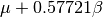 and a variance of 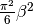.
References
Gumbel, E. J., Statistics of Extremes, New York: Columbia University Press, 1958.
Reiss, R.-D. and Thomas, M., Statistical Analysis of Extreme Values from Insurance, Finance, Hydrology and Other Fields, Basel: Birkhauser Verlag, 2001.
Examples
Draw samples from the distribution:
>>> mu, beta = 0, 0.1 # location and scale >>> s = np.random.gumbel(mu, beta, 1000)
Display the histogram of the samples, along with the probability density function:
>>> import matplotlib.pyplot as plt >>> count, bins, ignored = plt.hist(s, 30, normed=True) >>> plt.plot(bins, (1/beta)*np.exp(-(bins - mu)/beta) ... * np.exp( -np.exp( -(bins - mu) /beta) ), ... linewidth=2, color='r') >>> plt.show()
Show how an extreme value distribution can arise from a Gaussian process and compare to a Gaussian:
>>> means = [] >>> maxima = [] >>> for i in range(0,1000) : ... a = np.random.normal(mu, beta, 1000) ... means.append(a.mean()) ... maxima.append(a.max()) >>> count, bins, ignored = plt.hist(maxima, 30, normed=True) >>> beta = np.std(maxima)*np.pi/np.sqrt(6) >>> mu = np.mean(maxima) - 0.57721*beta >>> plt.plot(bins, (1/beta)*np.exp(-(bins - mu)/beta) ... * np.exp(-np.exp(-(bins - mu)/beta)), ... linewidth=2, color='r') >>> plt.plot(bins, 1/(beta * np.sqrt(2 * np.pi)) ... * np.exp(-(bins - mu)**2 / (2 * beta**2)), ... linewidth=2, color='g') >>> plt.show()
- pylayers.signal.EnergyDetector.hypergeometric(ngood, nbad, nsample, size=None)¶
Draw samples from a Hypergeometric distribution.
Samples are drawn from a Hypergeometric distribution with specified parameters, ngood (ways to make a good selection), nbad (ways to make a bad selection), and nsample = number of items sampled, which is less than or equal to the sum ngood + nbad.
Parameters: ngood : int or array_like
Number of ways to make a good selection. Must be nonnegative.
nbad : int or array_like
Number of ways to make a bad selection. Must be nonnegative.
nsample : int or array_like
Number of items sampled. Must be at least 1 and at most ngood + nbad.
size : int or tuple of int
Output shape. If the given shape is, e.g., (m, n, k), then m * n * k samples are drawn.
Returns: samples : ndarray or scalar
The values are all integers in [0, n].
See also
- scipy.stats.distributions.hypergeom
- probability density function, distribution or cumulative density function, etc.
Notes
The probability density for the Hypergeometric distribution is
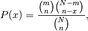
where 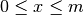 and 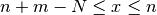
for P(x) the probability of x successes, n = ngood, m = nbad, and N = number of samples.
Consider an urn with black and white marbles in it, ngood of them black and nbad are white. If you draw nsample balls without replacement, then the Hypergeometric distribution describes the distribution of black balls in the drawn sample.
Note that this distribution is very similar to the Binomial distribution, except that in this case, samples are drawn without replacement, whereas in the Binomial case samples are drawn with replacement (or the sample space is infinite). As the sample space becomes large, this distribution approaches the Binomial.
References
[125] Lentner, Marvin, “Elementary Applied Statistics”, Bogden and Quigley, 1972. [126] Weisstein, Eric W. “Hypergeometric Distribution.” From MathWorld–A Wolfram Web Resource. http://mathworld.wolfram.com/HypergeometricDistribution.html [127] Wikipedia, “Hypergeometric-distribution”, http://en.wikipedia.org/wiki/Hypergeometric-distribution Examples
Draw samples from the distribution:
>>> ngood, nbad, nsamp = 100, 2, 10 # number of good, number of bad, and number of samples >>> s = np.random.hypergeometric(ngood, nbad, nsamp, 1000) >>> hist(s) # note that it is very unlikely to grab both bad items
Suppose you have an urn with 15 white and 15 black marbles. If you pull 15 marbles at random, how likely is it that 12 or more of them are one color?
>>> s = np.random.hypergeometric(15, 15, 15, 100000) >>> sum(s>=12)/100000. + sum(s<=3)/100000. # answer = 0.003 ... pretty unlikely!
- pylayers.signal.EnergyDetector.laplace(loc=0.0, scale=1.0, size=None)¶
Draw samples from the Laplace or double exponential distribution with specified location (or mean) and scale (decay).
The Laplace distribution is similar to the Gaussian/normal distribution, but is sharper at the peak and has fatter tails. It represents the difference between two independent, identically distributed exponential random variables.
Parameters: loc : float
The position,
, of the distribution peak.scale : float
 , the exponential decay.
, the exponential decay.Notes
It has the probability density function
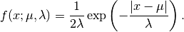
The first law of Laplace, from 1774, states that the frequency of an error can be expressed as an exponential function of the absolute magnitude of the error, which leads to the Laplace distribution. For many problems in Economics and Health sciences, this distribution seems to model the data better than the standard Gaussian distribution
References
[128] Abramowitz, M. and Stegun, I. A. (Eds.). Handbook of Mathematical Functions with Formulas, Graphs, and Mathematical Tables, 9th printing. New York: Dover, 1972. [129] The Laplace distribution and generalizations By Samuel Kotz, Tomasz J. Kozubowski, Krzysztof Podgorski, Birkhauser, 2001. [130] Weisstein, Eric W. “Laplace Distribution.” From MathWorld–A Wolfram Web Resource. http://mathworld.wolfram.com/LaplaceDistribution.html [131] Wikipedia, “Laplace distribution”, http://en.wikipedia.org/wiki/Laplace_distribution Examples
Draw samples from the distribution
>>> loc, scale = 0., 1. >>> s = np.random.laplace(loc, scale, 1000)
Display the histogram of the samples, along with the probability density function:
>>> import matplotlib.pyplot as plt >>> count, bins, ignored = plt.hist(s, 30, normed=True) >>> x = np.arange(-8., 8., .01) >>> pdf = np.exp(-abs(x-loc/scale))/(2.*scale) >>> plt.plot(x, pdf)
Plot Gaussian for comparison:
>>> g = (1/(scale * np.sqrt(2 * np.pi)) * ... np.exp( - (x - loc)**2 / (2 * scale**2) )) >>> plt.plot(x,g)
- pylayers.signal.EnergyDetector.logistic(loc=0.0, scale=1.0, size=None)¶
Draw samples from a Logistic distribution.
Samples are drawn from a Logistic distribution with specified parameters, loc (location or mean, also median), and scale (>0).
Parameters: loc : float
scale : float > 0.
size : {tuple, int}
Output shape. If the given shape is, e.g., (m, n, k), then m * n * k samples are drawn.
Returns: samples : {ndarray, scalar}
where the values are all integers in [0, n].
See also
- scipy.stats.distributions.logistic
- probability density function, distribution or cumulative density function, etc.
Notes
The probability density for the Logistic distribution is
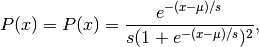
where
= location and  = scale.
= scale.The Logistic distribution is used in Extreme Value problems where it can act as a mixture of Gumbel distributions, in Epidemiology, and by the World Chess Federation (FIDE) where it is used in the Elo ranking system, assuming the performance of each player is a logistically distributed random variable.
References
[132] Reiss, R.-D. and Thomas M. (2001), Statistical Analysis of Extreme Values, from Insurance, Finance, Hydrology and Other Fields, Birkhauser Verlag, Basel, pp 132-133. [133] Weisstein, Eric W. “Logistic Distribution.” From MathWorld–A Wolfram Web Resource. http://mathworld.wolfram.com/LogisticDistribution.html [134] Wikipedia, “Logistic-distribution”, http://en.wikipedia.org/wiki/Logistic-distribution Examples
Draw samples from the distribution:
>>> loc, scale = 10, 1 >>> s = np.random.logistic(loc, scale, 10000) >>> count, bins, ignored = plt.hist(s, bins=50)
# plot against distribution
>>> def logist(x, loc, scale): ... return exp((loc-x)/scale)/(scale*(1+exp((loc-x)/scale))**2) >>> plt.plot(bins, logist(bins, loc, scale)*count.max()/\ ... logist(bins, loc, scale).max()) >>> plt.show()
- pylayers.signal.EnergyDetector.lognormal(mean=0.0, sigma=1.0, size=None)¶
Return samples drawn from a log-normal distribution.
Draw samples from a log-normal distribution with specified mean, standard deviation, and array shape. Note that the mean and standard deviation are not the values for the distribution itself, but of the underlying normal distribution it is derived from.
Parameters: mean : float
Mean value of the underlying normal distribution
sigma : float, > 0.
Standard deviation of the underlying normal distribution
size : tuple of ints
Output shape. If the given shape is, e.g., (m, n, k), then m * n * k samples are drawn.
Returns: samples : ndarray or float
The desired samples. An array of the same shape as size if given, if size is None a float is returned.
See also
- scipy.stats.lognorm
- probability density function, distribution, cumulative density function, etc.
Notes
A variable x has a log-normal distribution if log(x) is normally distributed. The probability density function for the log-normal distribution is:
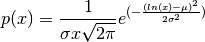
where
is the mean and  is the standard
deviation of the normally distributed logarithm of the variable.
A log-normal distribution results if a random variable is the product
of a large number of independent, identically-distributed variables in
the same way that a normal distribution results if the variable is the
sum of a large number of independent, identically-distributed
variables.
is the standard
deviation of the normally distributed logarithm of the variable.
A log-normal distribution results if a random variable is the product
of a large number of independent, identically-distributed variables in
the same way that a normal distribution results if the variable is the
sum of a large number of independent, identically-distributed
variables.References
Limpert, E., Stahel, W. A., and Abbt, M., “Log-normal Distributions across the Sciences: Keys and Clues,” BioScience, Vol. 51, No. 5, May, 2001. http://stat.ethz.ch/~stahel/lognormal/bioscience.pdf
Reiss, R.D. and Thomas, M., Statistical Analysis of Extreme Values, Basel: Birkhauser Verlag, 2001, pp. 31-32.
Examples
Draw samples from the distribution:
>>> mu, sigma = 3., 1. # mean and standard deviation >>> s = np.random.lognormal(mu, sigma, 1000)
Display the histogram of the samples, along with the probability density function:
>>> import matplotlib.pyplot as plt >>> count, bins, ignored = plt.hist(s, 100, normed=True, align='mid')
>>> x = np.linspace(min(bins), max(bins), 10000) >>> pdf = (np.exp(-(np.log(x) - mu)**2 / (2 * sigma**2)) ... / (x * sigma * np.sqrt(2 * np.pi)))
>>> plt.plot(x, pdf, linewidth=2, color='r') >>> plt.axis('tight') >>> plt.show()
Demonstrate that taking the products of random samples from a uniform distribution can be fit well by a log-normal probability density function.
>>> # Generate a thousand samples: each is the product of 100 random >>> # values, drawn from a normal distribution. >>> b = [] >>> for i in range(1000): ... a = 10. + np.random.random(100) ... b.append(np.product(a))
>>> b = np.array(b) / np.min(b) # scale values to be positive >>> count, bins, ignored = plt.hist(b, 100, normed=True, align='center') >>> sigma = np.std(np.log(b)) >>> mu = np.mean(np.log(b))
>>> x = np.linspace(min(bins), max(bins), 10000) >>> pdf = (np.exp(-(np.log(x) - mu)**2 / (2 * sigma**2)) ... / (x * sigma * np.sqrt(2 * np.pi)))
>>> plt.plot(x, pdf, color='r', linewidth=2) >>> plt.show()
- pylayers.signal.EnergyDetector.logseries(p, size=None)¶
Draw samples from a Logarithmic Series distribution.
Samples are drawn from a Log Series distribution with specified parameter, p (probability, 0 < p < 1).
Parameters: loc : float
scale : float > 0.
size : {tuple, int}
Output shape. If the given shape is, e.g., (m, n, k), then m * n * k samples are drawn.
Returns: samples : {ndarray, scalar}
where the values are all integers in [0, n].
See also
- scipy.stats.distributions.logser
- probability density function, distribution or cumulative density function, etc.
Notes
The probability density for the Log Series distribution is
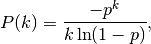
where p = probability.
The Log Series distribution is frequently used to represent species richness and occurrence, first proposed by Fisher, Corbet, and Williams in 1943 [2]. It may also be used to model the numbers of occupants seen in cars [3].
References
[135] Buzas, Martin A.; Culver, Stephen J., Understanding regional species diversity through the log series distribution of occurrences: BIODIVERSITY RESEARCH Diversity & Distributions, Volume 5, Number 5, September 1999 , pp. 187-195(9). [136] Fisher, R.A,, A.S. Corbet, and C.B. Williams. 1943. The relation between the number of species and the number of individuals in a random sample of an animal population. Journal of Animal Ecology, 12:42-58. [137] D. J. Hand, F. Daly, D. Lunn, E. Ostrowski, A Handbook of Small Data Sets, CRC Press, 1994. [138] Wikipedia, “Logarithmic-distribution”, http://en.wikipedia.org/wiki/Logarithmic-distribution Examples
Draw samples from the distribution:
>>> a = .6 >>> s = np.random.logseries(a, 10000) >>> count, bins, ignored = plt.hist(s)
# plot against distribution
>>> def logseries(k, p): ... return -p**k/(k*log(1-p)) >>> plt.plot(bins, logseries(bins, a)*count.max()/ logseries(bins, a).max(), 'r') >>> plt.show()
- pylayers.signal.EnergyDetector.multinomial(n, pvals, size=None)¶
Draw samples from a multinomial distribution.
The multinomial distribution is a multivariate generalisation of the binomial distribution. Take an experiment with one of p possible outcomes. An example of such an experiment is throwing a dice, where the outcome can be 1 through 6. Each sample drawn from the distribution represents n such experiments. Its values, X_i = [X_0, X_1, ..., X_p], represent the number of times the outcome was i.
Parameters: n : int
Number of experiments.
pvals : sequence of floats, length p
Probabilities of each of the p different outcomes. These should sum to 1 (however, the last element is always assumed to account for the remaining probability, as long as sum(pvals[:-1]) <= 1).
size : tuple of ints
Given a size of (M, N, K), then M*N*K samples are drawn, and the output shape becomes (M, N, K, p), since each sample has shape (p,).
Examples
Throw a dice 20 times:
>>> np.random.multinomial(20, [1/6.]*6, size=1) array([[4, 1, 7, 5, 2, 1]])
It landed 4 times on 1, once on 2, etc.
Now, throw the dice 20 times, and 20 times again:
>>> np.random.multinomial(20, [1/6.]*6, size=2) array([[3, 4, 3, 3, 4, 3], [2, 4, 3, 4, 0, 7]])
For the first run, we threw 3 times 1, 4 times 2, etc. For the second, we threw 2 times 1, 4 times 2, etc.
A loaded dice is more likely to land on number 6:
>>> np.random.multinomial(100, [1/7.]*5) array([13, 16, 13, 16, 42])
- pylayers.signal.EnergyDetector.multivariate_normal(mean, cov[, size])¶
Draw random samples from a multivariate normal distribution.
The multivariate normal, multinormal or Gaussian distribution is a generalization of the one-dimensional normal distribution to higher dimensions. Such a distribution is specified by its mean and covariance matrix. These parameters are analogous to the mean (average or “center”) and variance (standard deviation, or “width,” squared) of the one-dimensional normal distribution.
Parameters: mean : 1-D array_like, of length N
Mean of the N-dimensional distribution.
cov : 2-D array_like, of shape (N, N)
Covariance matrix of the distribution. Must be symmetric and positive semi-definite for “physically meaningful” results.
size : int or tuple of ints, optional
Given a shape of, for example, (m,n,k), m*n*k samples are generated, and packed in an m-by-n-by-k arrangement. Because each sample is N-dimensional, the output shape is (m,n,k,N). If no shape is specified, a single (N-D) sample is returned.
Returns: out : ndarray
The drawn samples, of shape size, if that was provided. If not, the shape is (N,).
In other words, each entry out[i,j,...,:] is an N-dimensional value drawn from the distribution.
Notes
The mean is a coordinate in N-dimensional space, which represents the location where samples are most likely to be generated. This is analogous to the peak of the bell curve for the one-dimensional or univariate normal distribution.
Covariance indicates the level to which two variables vary together. From the multivariate normal distribution, we draw N-dimensional samples, 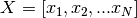. The covariance matrix element 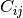 is the covariance of
 and
and  .
The element 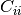 is the variance of (i.e. its
“spread”).
.
The element 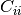 is the variance of (i.e. its
“spread”).Instead of specifying the full covariance matrix, popular approximations include:
- Spherical covariance (cov is a multiple of the identity matrix)
- Diagonal covariance (cov has non-negative elements, and only on the diagonal)
This geometrical property can be seen in two dimensions by plotting generated data-points:
>>> mean = [0,0] >>> cov = [[1,0],[0,100]] # diagonal covariance, points lie on x or y-axis
>>> import matplotlib.pyplot as plt >>> x,y = np.random.multivariate_normal(mean,cov,5000).T >>> plt.plot(x,y,'x'); plt.axis('equal'); plt.show()
Note that the covariance matrix must be non-negative definite.
References
Papoulis, A., Probability, Random Variables, and Stochastic Processes, 3rd ed., New York: McGraw-Hill, 1991.
Duda, R. O., Hart, P. E., and Stork, D. G., Pattern Classification, 2nd ed., New York: Wiley, 2001.
Examples
>>> mean = (1,2) >>> cov = [[1,0],[1,0]] >>> x = np.random.multivariate_normal(mean,cov,(3,3)) >>> x.shape (3, 3, 2)
The following is probably true, given that 0.6 is roughly twice the standard deviation:
>>> print list( (x[0,0,:] - mean) < 0.6 ) [True, True]
- pylayers.signal.EnergyDetector.negative_binomial(n, p, size=None)¶
Draw samples from a negative_binomial distribution.
Samples are drawn from a negative_Binomial distribution with specified parameters, n trials and p probability of success where n is an integer > 0 and p is in the interval [0, 1].
Parameters: n : int
Parameter, > 0.
p : float
Parameter, >= 0 and <=1.
size : int or tuple of ints
Output shape. If the given shape is, e.g., (m, n, k), then m * n * k samples are drawn.
Returns: samples : int or ndarray of ints
Drawn samples.
Notes
The probability density for the Negative Binomial distribution is
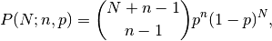
where
 is the number of successes, is the probability
of success, and 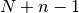 is the number of trials.
is the number of successes, is the probability
of success, and 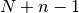 is the number of trials.The negative binomial distribution gives the probability of n-1 successes and N failures in N+n-1 trials, and success on the (N+n)th trial.
If one throws a die repeatedly until the third time a “1” appears, then the probability distribution of the number of non-“1”s that appear before the third “1” is a negative binomial distribution.
References
[139] Weisstein, Eric W. “Negative Binomial Distribution.” From MathWorld–A Wolfram Web Resource. http://mathworld.wolfram.com/NegativeBinomialDistribution.html [140] Wikipedia, “Negative binomial distribution”, http://en.wikipedia.org/wiki/Negative_binomial_distribution Examples
Draw samples from the distribution:
A real world example. A company drills wild-cat oil exploration wells, each with an estimated probability of success of 0.1. What is the probability of having one success for each successive well, that is what is the probability of a single success after drilling 5 wells, after 6 wells, etc.?
>>> s = np.random.negative_binomial(1, 0.1, 100000) >>> for i in range(1, 11): ... probability = sum(s<i) / 100000. ... print i, "wells drilled, probability of one success =", probability
- pylayers.signal.EnergyDetector.noncentral_chisquare(df, nonc, size=None)¶
Draw samples from a noncentral chi-square distribution.
The noncentral 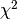 distribution is a generalisation of the distribution.
Parameters: df : int
Degrees of freedom, should be >= 1.
nonc : float
Non-centrality, should be > 0.
size : int or tuple of ints
Shape of the output.
Notes
The probability density function for the noncentral Chi-square distribution is
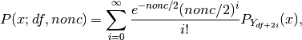
where 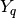 is the Chi-square with q degrees of freedom.
In Delhi (2007), it is noted that the noncentral chi-square is useful in bombing and coverage problems, the probability of killing the point target given by the noncentral chi-squared distribution.
References
[141] Delhi, M.S. Holla, “On a noncentral chi-square distribution in the analysis of weapon systems effectiveness”, Metrika, Volume 15, Number 1 / December, 1970. [142] Wikipedia, “Noncentral chi-square distribution” http://en.wikipedia.org/wiki/Noncentral_chi-square_distribution Examples
Draw values from the distribution and plot the histogram
>>> import matplotlib.pyplot as plt >>> values = plt.hist(np.random.noncentral_chisquare(3, 20, 100000), ... bins=200, normed=True) >>> plt.show()
Draw values from a noncentral chisquare with very small noncentrality, and compare to a chisquare.
>>> plt.figure() >>> values = plt.hist(np.random.noncentral_chisquare(3, .0000001, 100000), ... bins=np.arange(0., 25, .1), normed=True) >>> values2 = plt.hist(np.random.chisquare(3, 100000), ... bins=np.arange(0., 25, .1), normed=True) >>> plt.plot(values[1][0:-1], values[0]-values2[0], 'ob') >>> plt.show()
Demonstrate how large values of non-centrality lead to a more symmetric distribution.
>>> plt.figure() >>> values = plt.hist(np.random.noncentral_chisquare(3, 20, 100000), ... bins=200, normed=True) >>> plt.show()
- pylayers.signal.EnergyDetector.noncentral_f(dfnum, dfden, nonc, size=None)¶
Draw samples from the noncentral F distribution.
Samples are drawn from an F distribution with specified parameters, dfnum (degrees of freedom in numerator) and dfden (degrees of freedom in denominator), where both parameters > 1. nonc is the non-centrality parameter.
Parameters: dfnum : int
Parameter, should be > 1.
dfden : int
Parameter, should be > 1.
nonc : float
Parameter, should be >= 0.
size : int or tuple of ints
Output shape. If the given shape is, e.g., (m, n, k), then m * n * k samples are drawn.
Returns: samples : scalar or ndarray
Drawn samples.
Notes
When calculating the power of an experiment (power = probability of rejecting the null hypothesis when a specific alternative is true) the non-central F statistic becomes important. When the null hypothesis is true, the F statistic follows a central F distribution. When the null hypothesis is not true, then it follows a non-central F statistic.
References
Weisstein, Eric W. “Noncentral F-Distribution.” From MathWorld–A Wolfram Web Resource. http://mathworld.wolfram.com/NoncentralF-Distribution.html
Wikipedia, “Noncentral F distribution”, http://en.wikipedia.org/wiki/Noncentral_F-distribution
Examples
In a study, testing for a specific alternative to the null hypothesis requires use of the Noncentral F distribution. We need to calculate the area in the tail of the distribution that exceeds the value of the F distribution for the null hypothesis. We’ll plot the two probability distributions for comparison.
>>> dfnum = 3 # between group deg of freedom >>> dfden = 20 # within groups degrees of freedom >>> nonc = 3.0 >>> nc_vals = np.random.noncentral_f(dfnum, dfden, nonc, 1000000) >>> NF = np.histogram(nc_vals, bins=50, normed=True) >>> c_vals = np.random.f(dfnum, dfden, 1000000) >>> F = np.histogram(c_vals, bins=50, normed=True) >>> plt.plot(F[1][1:], F[0]) >>> plt.plot(NF[1][1:], NF[0]) >>> plt.show()
- pylayers.signal.EnergyDetector.normal(loc=0.0, scale=1.0, size=None)¶
Draw random samples from a normal (Gaussian) distribution.
The probability density function of the normal distribution, first derived by De Moivre and 200 years later by both Gauss and Laplace independently [144], is often called the bell curve because of its characteristic shape (see the example below).
The normal distributions occurs often in nature. For example, it describes the commonly occurring distribution of samples influenced by a large number of tiny, random disturbances, each with its own unique distribution [144].
Parameters: loc : float
Mean (“centre”) of the distribution.
scale : float
Standard deviation (spread or “width”) of the distribution.
size : tuple of ints
Output shape. If the given shape is, e.g., (m, n, k), then m * n * k samples are drawn.
See also
- scipy.stats.distributions.norm
- probability density function, distribution or cumulative density function, etc.
Notes
The probability density for the Gaussian distribution is
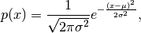
where
is the mean and the standard deviation.
The square of the standard deviation,  , is called the
variance.
, is called the
variance.The function has its peak at the mean, and its “spread” increases with the standard deviation (the function reaches 0.607 times its maximum at 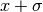 and 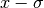 [144]). This implies that numpy.random.normal is more likely to return samples lying close to the mean, rather than those far away.
References
[143] Wikipedia, “Normal distribution”, http://en.wikipedia.org/wiki/Normal_distribution [144] (1, 2, 3) P. R. Peebles Jr., “Central Limit Theorem” in “Probability, Random Variables and Random Signal Principles”, 4th ed., 2001, pp. 51, 51, 125. Examples
Draw samples from the distribution:
>>> mu, sigma = 0, 0.1 # mean and standard deviation >>> s = np.random.normal(mu, sigma, 1000)
Verify the mean and the variance:
>>> abs(mu - np.mean(s)) < 0.01 True
>>> abs(sigma - np.std(s, ddof=1)) < 0.01 True
Display the histogram of the samples, along with the probability density function:
>>> import matplotlib.pyplot as plt >>> count, bins, ignored = plt.hist(s, 30, normed=True) >>> plt.plot(bins, 1/(sigma * np.sqrt(2 * np.pi)) * ... np.exp( - (bins - mu)**2 / (2 * sigma**2) ), ... linewidth=2, color='r') >>> plt.show()
- pylayers.signal.EnergyDetector.pareto(a, size=None)¶
Draw samples from a Pareto II or Lomax distribution with specified shape.
The Lomax or Pareto II distribution is a shifted Pareto distribution. The classical Pareto distribution can be obtained from the Lomax distribution by adding the location parameter m, see below. The smallest value of the Lomax distribution is zero while for the classical Pareto distribution it is m, where the standard Pareto distribution has location m=1. Lomax can also be considered as a simplified version of the Generalized Pareto distribution (available in SciPy), with the scale set to one and the location set to zero.
The Pareto distribution must be greater than zero, and is unbounded above. It is also known as the “80-20 rule”. In this distribution, 80 percent of the weights are in the lowest 20 percent of the range, while the other 20 percent fill the remaining 80 percent of the range.
Parameters: shape : float, > 0.
Shape of the distribution.
size : tuple of ints
Output shape. If the given shape is, e.g., (m, n, k), then m * n * k samples are drawn.
See also
- scipy.stats.distributions.lomax.pdf
- probability density function, distribution or cumulative density function, etc.
- scipy.stats.distributions.genpareto.pdf
- probability density function, distribution or cumulative density function, etc.
Notes
The probability density for the Pareto distribution is
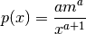
where
 is the shape and
is the shape and  the location
the locationThe Pareto distribution, named after the Italian economist Vilfredo Pareto, is a power law probability distribution useful in many real world problems. Outside the field of economics it is generally referred to as the Bradford distribution. Pareto developed the distribution to describe the distribution of wealth in an economy. It has also found use in insurance, web page access statistics, oil field sizes, and many other problems, including the download frequency for projects in Sourceforge [1]. It is one of the so-called “fat-tailed” distributions.
References
[145] Francis Hunt and Paul Johnson, On the Pareto Distribution of Sourceforge projects. [146] Pareto, V. (1896). Course of Political Economy. Lausanne. [147] Reiss, R.D., Thomas, M.(2001), Statistical Analysis of Extreme Values, Birkhauser Verlag, Basel, pp 23-30. [148] Wikipedia, “Pareto distribution”, http://en.wikipedia.org/wiki/Pareto_distribution Examples
Draw samples from the distribution:
>>> a, m = 3., 1. # shape and mode >>> s = np.random.pareto(a, 1000) + m
Display the histogram of the samples, along with the probability density function:
>>> import matplotlib.pyplot as plt >>> count, bins, ignored = plt.hist(s, 100, normed=True, align='center') >>> fit = a*m**a/bins**(a+1) >>> plt.plot(bins, max(count)*fit/max(fit),linewidth=2, color='r') >>> plt.show()
- pylayers.signal.EnergyDetector.permutation(x)¶
Randomly permute a sequence, or return a permuted range.
If x is a multi-dimensional array, it is only shuffled along its first index.
Parameters: x : int or array_like
If x is an integer, randomly permute np.arange(x). If x is an array, make a copy and shuffle the elements randomly.
Returns: out : ndarray
Permuted sequence or array range.
Examples
>>> np.random.permutation(10) array([1, 7, 4, 3, 0, 9, 2, 5, 8, 6])
>>> np.random.permutation([1, 4, 9, 12, 15]) array([15, 1, 9, 4, 12])
>>> arr = np.arange(9).reshape((3, 3)) >>> np.random.permutation(arr) array([[6, 7, 8], [0, 1, 2], [3, 4, 5]])
- pylayers.signal.EnergyDetector.poisson(lam=1.0, size=None)¶
Draw samples from a Poisson distribution.
The Poisson distribution is the limit of the Binomial distribution for large N.
Parameters: lam : float
Expectation of interval, should be >= 0.
size : int or tuple of ints, optional
Output shape. If the given shape is, e.g., (m, n, k), then m * n * k samples are drawn.
Notes
The Poisson distribution

For events with an expected separation
the Poisson
distribution 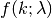 describes the probability of
events occurring within the observed interval .Because the output is limited to the range of the C long type, a ValueError is raised when lam is within 10 sigma of the maximum representable value.
References
[149] Weisstein, Eric W. “Poisson Distribution.” From MathWorld–A Wolfram Web Resource. http://mathworld.wolfram.com/PoissonDistribution.html [150] Wikipedia, “Poisson distribution”, http://en.wikipedia.org/wiki/Poisson_distribution Examples
Draw samples from the distribution:
>>> import numpy as np >>> s = np.random.poisson(5, 10000)
Display histogram of the sample:
>>> import matplotlib.pyplot as plt >>> count, bins, ignored = plt.hist(s, 14, normed=True) >>> plt.show()
- pylayers.signal.EnergyDetector.power(a, size=None)¶
Draws samples in [0, 1] from a power distribution with positive exponent a - 1.
Also known as the power function distribution.
Parameters: a : float
parameter, > 0
size : tuple of ints
- Output shape. If the given shape is, e.g., (m, n, k), then
m * n * k samples are drawn.
Returns: samples : {ndarray, scalar}
The returned samples lie in [0, 1].
Raises: ValueError :
If a<1.
Notes
The probability density function is
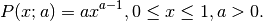
The power function distribution is just the inverse of the Pareto distribution. It may also be seen as a special case of the Beta distribution.
It is used, for example, in modeling the over-reporting of insurance claims.
References
[151] Christian Kleiber, Samuel Kotz, “Statistical size distributions in economics and actuarial sciences”, Wiley, 2003. [152] Heckert, N. A. and Filliben, James J. (2003). NIST Handbook 148: Dataplot Reference Manual, Volume 2: Let Subcommands and Library Functions”, National Institute of Standards and Technology Handbook Series, June 2003. http://www.itl.nist.gov/div898/software/dataplot/refman2/auxillar/powpdf.pdf Examples
Draw samples from the distribution:
>>> a = 5. # shape >>> samples = 1000 >>> s = np.random.power(a, samples)
Display the histogram of the samples, along with the probability density function:
>>> import matplotlib.pyplot as plt >>> count, bins, ignored = plt.hist(s, bins=30) >>> x = np.linspace(0, 1, 100) >>> y = a*x**(a-1.) >>> normed_y = samples*np.diff(bins)[0]*y >>> plt.plot(x, normed_y) >>> plt.show()
Compare the power function distribution to the inverse of the Pareto.
>>> from scipy import stats >>> rvs = np.random.power(5, 1000000) >>> rvsp = np.random.pareto(5, 1000000) >>> xx = np.linspace(0,1,100) >>> powpdf = stats.powerlaw.pdf(xx,5)
>>> plt.figure() >>> plt.hist(rvs, bins=50, normed=True) >>> plt.plot(xx,powpdf,'r-') >>> plt.title('np.random.power(5)')
>>> plt.figure() >>> plt.hist(1./(1.+rvsp), bins=50, normed=True) >>> plt.plot(xx,powpdf,'r-') >>> plt.title('inverse of 1 + np.random.pareto(5)')
>>> plt.figure() >>> plt.hist(1./(1.+rvsp), bins=50, normed=True) >>> plt.plot(xx,powpdf,'r-') >>> plt.title('inverse of stats.pareto(5)')
- pylayers.signal.EnergyDetector.rand(d0, d1, ..., dn)¶
Random values in a given shape.
Create an array of the given shape and propagate it with random samples from a uniform distribution over [0, 1).
Parameters: d0, d1, ..., dn : int, optional
The dimensions of the returned array, should all be positive. If no argument is given a single Python float is returned.
Returns: out : ndarray, shape (d0, d1, ..., dn)
Random values.
See also
Notes
This is a convenience function. If you want an interface that takes a shape-tuple as the first argument, refer to np.random.random_sample .
Examples
>>> np.random.rand(3,2) array([[ 0.14022471, 0.96360618], #random [ 0.37601032, 0.25528411], #random [ 0.49313049, 0.94909878]]) #random
- pylayers.signal.EnergyDetector.randint(low, high=None, size=None)¶
Return random integers from low (inclusive) to high (exclusive).
Return random integers from the “discrete uniform” distribution in the “half-open” interval [low, high). If high is None (the default), then results are from [0, low).
Parameters: low : int
Lowest (signed) integer to be drawn from the distribution (unless high=None, in which case this parameter is the highest such integer).
high : int, optional
If provided, one above the largest (signed) integer to be drawn from the distribution (see above for behavior if high=None).
size : int or tuple of ints, optional
Output shape. Default is None, in which case a single int is returned.
Returns: out : int or ndarray of ints
size-shaped array of random integers from the appropriate distribution, or a single such random int if size not provided.
See also
- random.random_integers
- similar to randint, only for the closed interval [low, high], and 1 is the lowest value if high is omitted. In particular, this other one is the one to use to generate uniformly distributed discrete non-integers.
Examples
>>> np.random.randint(2, size=10) array([1, 0, 0, 0, 1, 1, 0, 0, 1, 0]) >>> np.random.randint(1, size=10) array([0, 0, 0, 0, 0, 0, 0, 0, 0, 0])
Generate a 2 x 4 array of ints between 0 and 4, inclusive:
>>> np.random.randint(5, size=(2, 4)) array([[4, 0, 2, 1], [3, 2, 2, 0]])
- pylayers.signal.EnergyDetector.randn(d0, d1, ..., dn)¶
Return a sample (or samples) from the “standard normal” distribution.
If positive, int_like or int-convertible arguments are provided, randn generates an array of shape (d0, d1, ..., dn), filled with random floats sampled from a univariate “normal” (Gaussian) distribution of mean 0 and variance 1 (if any of the 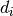 are floats, they are first converted to integers by truncation). A single float randomly sampled from the distribution is returned if no argument is provided.
This is a convenience function. If you want an interface that takes a tuple as the first argument, use numpy.random.standard_normal instead.
Parameters: d0, d1, ..., dn : int, optional
The dimensions of the returned array, should be all positive. If no argument is given a single Python float is returned.
Returns: Z : ndarray or float
A (d0, d1, ..., dn)-shaped array of floating-point samples from the standard normal distribution, or a single such float if no parameters were supplied.
See also
- random.standard_normal
- Similar, but takes a tuple as its argument.
Notes
For random samples from 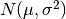, use:
sigma * np.random.randn(...) + mu
Examples
>>> np.random.randn() 2.1923875335537315 #random
Two-by-four array of samples from N(3, 6.25):
>>> 2.5 * np.random.randn(2, 4) + 3 array([[-4.49401501, 4.00950034, -1.81814867, 7.29718677], #random [ 0.39924804, 4.68456316, 4.99394529, 4.84057254]]) #random
- pylayers.signal.EnergyDetector.random(size=None)¶
Return random floats in the half-open interval [0.0, 1.0).
Results are from the “continuous uniform” distribution over the stated interval. To sample 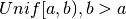 multiply the output of random_sample by (b-a) and add a:
(b - a) * random_sample() + a
Parameters: size : int or tuple of ints, optional
Defines the shape of the returned array of random floats. If None (the default), returns a single float.
Returns: out : float or ndarray of floats
Array of random floats of shape size (unless size=None, in which case a single float is returned).
Examples
>>> np.random.random_sample() 0.47108547995356098 >>> type(np.random.random_sample()) <type 'float'> >>> np.random.random_sample((5,)) array([ 0.30220482, 0.86820401, 0.1654503 , 0.11659149, 0.54323428])
Three-by-two array of random numbers from [-5, 0):
>>> 5 * np.random.random_sample((3, 2)) - 5 array([[-3.99149989, -0.52338984], [-2.99091858, -0.79479508], [-1.23204345, -1.75224494]])
- pylayers.signal.EnergyDetector.random_integers(low, high=None, size=None)¶
Return random integers between low and high, inclusive.
Return random integers from the “discrete uniform” distribution in the closed interval [low, high]. If high is None (the default), then results are from [1, low].
Parameters: low : int
Lowest (signed) integer to be drawn from the distribution (unless high=None, in which case this parameter is the highest such integer).
high : int, optional
If provided, the largest (signed) integer to be drawn from the distribution (see above for behavior if high=None).
size : int or tuple of ints, optional
Output shape. Default is None, in which case a single int is returned.
Returns: out : int or ndarray of ints
size-shaped array of random integers from the appropriate distribution, or a single such random int if size not provided.
See also
- random.randint
- Similar to random_integers, only for the half-open interval [low, high), and 0 is the lowest value if high is omitted.
Notes
To sample from N evenly spaced floating-point numbers between a and b, use:
a + (b - a) * (np.random.random_integers(N) - 1) / (N - 1.)
Examples
>>> np.random.random_integers(5) 4 >>> type(np.random.random_integers(5)) <type 'int'> >>> np.random.random_integers(5, size=(3.,2.)) array([[5, 4], [3, 3], [4, 5]])
Choose five random numbers from the set of five evenly-spaced numbers between 0 and 2.5, inclusive (i.e., from the set 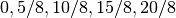):
>>> 2.5 * (np.random.random_integers(5, size=(5,)) - 1) / 4. array([ 0.625, 1.25 , 0.625, 0.625, 2.5 ])
Roll two six sided dice 1000 times and sum the results:
>>> d1 = np.random.random_integers(1, 6, 1000) >>> d2 = np.random.random_integers(1, 6, 1000) >>> dsums = d1 + d2
Display results as a histogram:
>>> import matplotlib.pyplot as plt >>> count, bins, ignored = plt.hist(dsums, 11, normed=True) >>> plt.show()
- pylayers.signal.EnergyDetector.random_sample(size=None)¶
Return random floats in the half-open interval [0.0, 1.0).
Results are from the “continuous uniform” distribution over the stated interval. To sample multiply the output of random_sample by (b-a) and add a:
(b - a) * random_sample() + a
Parameters: size : int or tuple of ints, optional
Defines the shape of the returned array of random floats. If None (the default), returns a single float.
Returns: out : float or ndarray of floats
Array of random floats of shape size (unless size=None, in which case a single float is returned).
Examples
>>> np.random.random_sample() 0.47108547995356098 >>> type(np.random.random_sample()) <type 'float'> >>> np.random.random_sample((5,)) array([ 0.30220482, 0.86820401, 0.1654503 , 0.11659149, 0.54323428])
Three-by-two array of random numbers from [-5, 0):
>>> 5 * np.random.random_sample((3, 2)) - 5 array([[-3.99149989, -0.52338984], [-2.99091858, -0.79479508], [-1.23204345, -1.75224494]])
- pylayers.signal.EnergyDetector.ranf(size=None)¶
Return random floats in the half-open interval [0.0, 1.0).
Results are from the “continuous uniform” distribution over the stated interval. To sample multiply the output of random_sample by (b-a) and add a:
(b - a) * random_sample() + a
Parameters: size : int or tuple of ints, optional
Defines the shape of the returned array of random floats. If None (the default), returns a single float.
Returns: out : float or ndarray of floats
Array of random floats of shape size (unless size=None, in which case a single float is returned).
Examples
>>> np.random.random_sample() 0.47108547995356098 >>> type(np.random.random_sample()) <type 'float'> >>> np.random.random_sample((5,)) array([ 0.30220482, 0.86820401, 0.1654503 , 0.11659149, 0.54323428])
Three-by-two array of random numbers from [-5, 0):
>>> 5 * np.random.random_sample((3, 2)) - 5 array([[-3.99149989, -0.52338984], [-2.99091858, -0.79479508], [-1.23204345, -1.75224494]])
- pylayers.signal.EnergyDetector.rayleigh(scale=1.0, size=None)¶
Draw samples from a Rayleigh distribution.
The
 and Weibull distributions are generalizations of the
Rayleigh.
and Weibull distributions are generalizations of the
Rayleigh.Parameters: scale : scalar
Scale, also equals the mode. Should be >= 0.
size : int or tuple of ints, optional
Shape of the output. Default is None, in which case a single value is returned.
Notes
The probability density function for the Rayleigh distribution is
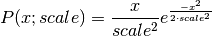
The Rayleigh distribution arises if the wind speed and wind direction are both gaussian variables, then the vector wind velocity forms a Rayleigh distribution. The Rayleigh distribution is used to model the expected output from wind turbines.
References
[153] Brighton Webs Ltd., Rayleigh Distribution, http://www.brighton-webs.co.uk/distributions/rayleigh.asp [154] Wikipedia, “Rayleigh distribution” http://en.wikipedia.org/wiki/Rayleigh_distribution Examples
Draw values from the distribution and plot the histogram
>>> values = hist(np.random.rayleigh(3, 100000), bins=200, normed=True)
Wave heights tend to follow a Rayleigh distribution. If the mean wave height is 1 meter, what fraction of waves are likely to be larger than 3 meters?
>>> meanvalue = 1 >>> modevalue = np.sqrt(2 / np.pi) * meanvalue >>> s = np.random.rayleigh(modevalue, 1000000)
The percentage of waves larger than 3 meters is:
>>> 100.*sum(s>3)/1000000. 0.087300000000000003
- pylayers.signal.EnergyDetector.sample(size=None)¶
Return random floats in the half-open interval [0.0, 1.0).
Results are from the “continuous uniform” distribution over the stated interval. To sample multiply the output of random_sample by (b-a) and add a:
(b - a) * random_sample() + a
Parameters: size : int or tuple of ints, optional
Defines the shape of the returned array of random floats. If None (the default), returns a single float.
Returns: out : float or ndarray of floats
Array of random floats of shape size (unless size=None, in which case a single float is returned).
Examples
>>> np.random.random_sample() 0.47108547995356098 >>> type(np.random.random_sample()) <type 'float'> >>> np.random.random_sample((5,)) array([ 0.30220482, 0.86820401, 0.1654503 , 0.11659149, 0.54323428])
Three-by-two array of random numbers from [-5, 0):
>>> 5 * np.random.random_sample((3, 2)) - 5 array([[-3.99149989, -0.52338984], [-2.99091858, -0.79479508], [-1.23204345, -1.75224494]])
- pylayers.signal.EnergyDetector.seed(seed=None)¶
Seed the generator.
This method is called when RandomState is initialized. It can be called again to re-seed the generator. For details, see RandomState.
Parameters: seed : int or array_like, optional
Seed for RandomState.
See also
RandomState
- pylayers.signal.EnergyDetector.set_state(state)¶
Set the internal state of the generator from a tuple.
For use if one has reason to manually (re-)set the internal state of the “Mersenne Twister”[155] pseudo-random number generating algorithm.
Parameters: state : tuple(str, ndarray of 624 uints, int, int, float)
The state tuple has the following items:
- the string ‘MT19937’, specifying the Mersenne Twister algorithm.
- a 1-D array of 624 unsigned integers keys.
- an integer pos.
- an integer has_gauss.
- a float cached_gaussian.
Returns: out : None
Returns ‘None’ on success.
See also
Notes
set_state and get_state are not needed to work with any of the random distributions in NumPy. If the internal state is manually altered, the user should know exactly what he/she is doing.
For backwards compatibility, the form (str, array of 624 uints, int) is also accepted although it is missing some information about the cached Gaussian value: state = ('MT19937', keys, pos).
References
[155] M. Matsumoto and T. Nishimura, “Mersenne Twister: A 623-dimensionally equidistributed uniform pseudorandom number generator,” ACM Trans. on Modeling and Computer Simulation, Vol. 8, No. 1, pp. 3-30, Jan. 1998.
- pylayers.signal.EnergyDetector.shuffle(x)¶
Modify a sequence in-place by shuffling its contents.
Parameters: x : array_like
The array or list to be shuffled.
Returns: None :
Examples
>>> arr = np.arange(10) >>> np.random.shuffle(arr) >>> arr [1 7 5 2 9 4 3 6 0 8]
This function only shuffles the array along the first index of a multi-dimensional array:
>>> arr = np.arange(9).reshape((3, 3)) >>> np.random.shuffle(arr) >>> arr array([[3, 4, 5], [6, 7, 8], [0, 1, 2]])
- pylayers.signal.EnergyDetector.standard_cauchy(size=None)¶
Standard Cauchy distribution with mode = 0.
Also known as the Lorentz distribution.
Parameters: size : int or tuple of ints
Shape of the output.
Returns: samples : ndarray or scalar
The drawn samples.
Notes
The probability density function for the full Cauchy distribution is
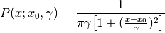
and the Standard Cauchy distribution just sets
 and
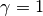
and
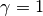The Cauchy distribution arises in the solution to the driven harmonic oscillator problem, and also describes spectral line broadening. It also describes the distribution of values at which a line tilted at a random angle will cut the x axis.
When studying hypothesis tests that assume normality, seeing how the tests perform on data from a Cauchy distribution is a good indicator of their sensitivity to a heavy-tailed distribution, since the Cauchy looks very much like a Gaussian distribution, but with heavier tails.
References
[156] NIST/SEMATECH e-Handbook of Statistical Methods, “Cauchy Distribution”, http://www.itl.nist.gov/div898/handbook/eda/section3/eda3663.htm [157] Weisstein, Eric W. “Cauchy Distribution.” From MathWorld–A Wolfram Web Resource. http://mathworld.wolfram.com/CauchyDistribution.html [158] Wikipedia, “Cauchy distribution” http://en.wikipedia.org/wiki/Cauchy_distribution Examples
Draw samples and plot the distribution:
>>> s = np.random.standard_cauchy(1000000) >>> s = s[(s>-25) & (s<25)] # truncate distribution so it plots well >>> plt.hist(s, bins=100) >>> plt.show()
- pylayers.signal.EnergyDetector.standard_exponential(size=None)¶
Draw samples from the standard exponential distribution.
standard_exponential is identical to the exponential distribution with a scale parameter of 1.
Parameters: size : int or tuple of ints
Shape of the output.
Returns: out : float or ndarray
Drawn samples.
Examples
Output a 3x8000 array:
>>> n = np.random.standard_exponential((3, 8000))
- pylayers.signal.EnergyDetector.standard_gamma(shape, size=None)¶
Draw samples from a Standard Gamma distribution.
Samples are drawn from a Gamma distribution with specified parameters, shape (sometimes designated “k”) and scale=1.
Parameters: shape : float
Parameter, should be > 0.
size : int or tuple of ints
Output shape. If the given shape is, e.g., (m, n, k), then m * n * k samples are drawn.
Returns: samples : ndarray or scalar
The drawn samples.
See also
- scipy.stats.distributions.gamma
- probability density function, distribution or cumulative density function, etc.
Notes
The probability density for the Gamma distribution is
where
is the shape and the scale,
and is the Gamma function.The Gamma distribution is often used to model the times to failure of electronic components, and arises naturally in processes for which the waiting times between Poisson distributed events are relevant.
References
[159] Weisstein, Eric W. “Gamma Distribution.” From MathWorld–A Wolfram Web Resource. http://mathworld.wolfram.com/GammaDistribution.html [160] Wikipedia, “Gamma-distribution”, http://en.wikipedia.org/wiki/Gamma-distribution Examples
Draw samples from the distribution:
>>> shape, scale = 2., 1. # mean and width >>> s = np.random.standard_gamma(shape, 1000000)
Display the histogram of the samples, along with the probability density function:
>>> import matplotlib.pyplot as plt >>> import scipy.special as sps >>> count, bins, ignored = plt.hist(s, 50, normed=True) >>> y = bins**(shape-1) * ((np.exp(-bins/scale))/ \ ... (sps.gamma(shape) * scale**shape)) >>> plt.plot(bins, y, linewidth=2, color='r') >>> plt.show()
- pylayers.signal.EnergyDetector.standard_normal(size=None)¶
Returns samples from a Standard Normal distribution (mean=0, stdev=1).
Parameters: size : int or tuple of ints, optional
Output shape. Default is None, in which case a single value is returned.
Returns: out : float or ndarray
Drawn samples.
Examples
>>> s = np.random.standard_normal(8000) >>> s array([ 0.6888893 , 0.78096262, -0.89086505, ..., 0.49876311, #random -0.38672696, -0.4685006 ]) #random >>> s.shape (8000,) >>> s = np.random.standard_normal(size=(3, 4, 2)) >>> s.shape (3, 4, 2)
- pylayers.signal.EnergyDetector.standard_t(df, size=None)¶
Standard Student’s t distribution with df degrees of freedom.
A special case of the hyperbolic distribution. As df gets large, the result resembles that of the standard normal distribution (standard_normal).
Parameters: df : int
Degrees of freedom, should be > 0.
size : int or tuple of ints, optional
Output shape. Default is None, in which case a single value is returned.
Returns: samples : ndarray or scalar
Drawn samples.
Notes
The probability density function for the t distribution is
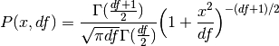
The t test is based on an assumption that the data come from a Normal distribution. The t test provides a way to test whether the sample mean (that is the mean calculated from the data) is a good estimate of the true mean.
The derivation of the t-distribution was forst published in 1908 by William Gisset while working for the Guinness Brewery in Dublin. Due to proprietary issues, he had to publish under a pseudonym, and so he used the name Student.
References
[161] Dalgaard, Peter, “Introductory Statistics With R”, Springer, 2002. [162] Wikipedia, “Student’s t-distribution” http://en.wikipedia.org/wiki/Student’s_t-distribution Examples
From Dalgaard page 83 [161], suppose the daily energy intake for 11 women in Kj is:
>>> intake = np.array([5260., 5470, 5640, 6180, 6390, 6515, 6805, 7515, \ ... 7515, 8230, 8770])
Does their energy intake deviate systematically from the recommended value of 7725 kJ?
We have 10 degrees of freedom, so is the sample mean within 95% of the recommended value?
>>> s = np.random.standard_t(10, size=100000) >>> np.mean(intake) 6753.636363636364 >>> intake.std(ddof=1) 1142.1232221373727
Calculate the t statistic, setting the ddof parameter to the unbiased value so the divisor in the standard deviation will be degrees of freedom, N-1.
>>> t = (np.mean(intake)-7725)/(intake.std(ddof=1)/np.sqrt(len(intake))) >>> import matplotlib.pyplot as plt >>> h = plt.hist(s, bins=100, normed=True)
For a one-sided t-test, how far out in the distribution does the t statistic appear?
>>> >>> np.sum(s<t) / float(len(s)) 0.0090699999999999999 #random
So the p-value is about 0.009, which says the null hypothesis has a probability of about 99% of being true.
- pylayers.signal.EnergyDetector.triangular(left, mode, right, size=None)¶
Draw samples from the triangular distribution.
The triangular distribution is a continuous probability distribution with lower limit left, peak at mode, and upper limit right. Unlike the other distributions, these parameters directly define the shape of the pdf.
Parameters: left : scalar
Lower limit.
mode : scalar
The value where the peak of the distribution occurs. The value should fulfill the condition left <= mode <= right.
right : scalar
Upper limit, should be larger than left.
size : int or tuple of ints, optional
Output shape. Default is None, in which case a single value is returned.
Returns: samples : ndarray or scalar
The returned samples all lie in the interval [left, right].
Notes
The probability density function for the Triangular distribution is
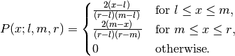
The triangular distribution is often used in ill-defined problems where the underlying distribution is not known, but some knowledge of the limits and mode exists. Often it is used in simulations.
References
[163] Wikipedia, “Triangular distribution” http://en.wikipedia.org/wiki/Triangular_distribution Examples
Draw values from the distribution and plot the histogram:
>>> import matplotlib.pyplot as plt >>> h = plt.hist(np.random.triangular(-3, 0, 8, 100000), bins=200, ... normed=True) >>> plt.show()
- pylayers.signal.EnergyDetector.uniform(low=0.0, high=1.0, size=1)¶
Draw samples from a uniform distribution.
Samples are uniformly distributed over the half-open interval [low, high) (includes low, but excludes high). In other words, any value within the given interval is equally likely to be drawn by uniform.
Parameters: low : float, optional
Lower boundary of the output interval. All values generated will be greater than or equal to low. The default value is 0.
high : float
Upper boundary of the output interval. All values generated will be less than high. The default value is 1.0.
size : int or tuple of ints, optional
Shape of output. If the given size is, for example, (m,n,k), m*n*k samples are generated. If no shape is specified, a single sample is returned.
Returns: out : ndarray
Drawn samples, with shape size.
See also
- randint
- Discrete uniform distribution, yielding integers.
- random_integers
- Discrete uniform distribution over the closed interval [low, high].
- random_sample
- Floats uniformly distributed over [0, 1).
- random
- Alias for random_sample.
- rand
- Convenience function that accepts dimensions as input, e.g., rand(2,2) would generate a 2-by-2 array of floats, uniformly distributed over [0, 1).
Notes
The probability density function of the uniform distribution is
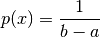
anywhere within the interval [a, b), and zero elsewhere.
Examples
Draw samples from the distribution:
>>> s = np.random.uniform(-1,0,1000)
All values are within the given interval:
>>> np.all(s >= -1) True >>> np.all(s < 0) True
Display the histogram of the samples, along with the probability density function:
>>> import matplotlib.pyplot as plt >>> count, bins, ignored = plt.hist(s, 15, normed=True) >>> plt.plot(bins, np.ones_like(bins), linewidth=2, color='r') >>> plt.show()
- pylayers.signal.EnergyDetector.vonmises(mu, kappa, size=None)¶
Draw samples from a von Mises distribution.
Samples are drawn from a von Mises distribution with specified mode (mu) and dispersion (kappa), on the interval [-pi, pi].
The von Mises distribution (also known as the circular normal distribution) is a continuous probability distribution on the unit circle. It may be thought of as the circular analogue of the normal distribution.
Parameters: mu : float
Mode (“center”) of the distribution.
kappa : float
Dispersion of the distribution, has to be >=0.
size : int or tuple of int
Output shape. If the given shape is, e.g., (m, n, k), then m * n * k samples are drawn.
Returns: samples : scalar or ndarray
The returned samples, which are in the interval [-pi, pi].
See also
- scipy.stats.distributions.vonmises
- probability density function, distribution, or cumulative density function, etc.
Notes
The probability density for the von Mises distribution is
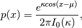
where
is the mode and  the dispersion,
and 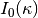 is the modified Bessel function of order 0.
the dispersion,
and 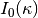 is the modified Bessel function of order 0.The von Mises is named for Richard Edler von Mises, who was born in Austria-Hungary, in what is now the Ukraine. He fled to the United States in 1939 and became a professor at Harvard. He worked in probability theory, aerodynamics, fluid mechanics, and philosophy of science.
References
Abramowitz, M. and Stegun, I. A. (ed.), Handbook of Mathematical Functions, New York: Dover, 1965.
von Mises, R., Mathematical Theory of Probability and Statistics, New York: Academic Press, 1964.
Examples
Draw samples from the distribution:
>>> mu, kappa = 0.0, 4.0 # mean and dispersion >>> s = np.random.vonmises(mu, kappa, 1000)
Display the histogram of the samples, along with the probability density function:
>>> import matplotlib.pyplot as plt >>> import scipy.special as sps >>> count, bins, ignored = plt.hist(s, 50, normed=True) >>> x = np.arange(-np.pi, np.pi, 2*np.pi/50.) >>> y = -np.exp(kappa*np.cos(x-mu))/(2*np.pi*sps.jn(0,kappa)) >>> plt.plot(x, y/max(y), linewidth=2, color='r') >>> plt.show()
- pylayers.signal.EnergyDetector.wald(mean, scale, size=None)¶
Draw samples from a Wald, or Inverse Gaussian, distribution.
As the scale approaches infinity, the distribution becomes more like a Gaussian.
Some references claim that the Wald is an Inverse Gaussian with mean=1, but this is by no means universal.
The Inverse Gaussian distribution was first studied in relationship to Brownian motion. In 1956 M.C.K. Tweedie used the name Inverse Gaussian because there is an inverse relationship between the time to cover a unit distance and distance covered in unit time.
Parameters: mean : scalar
Distribution mean, should be > 0.
scale : scalar
Scale parameter, should be >= 0.
size : int or tuple of ints, optional
Output shape. Default is None, in which case a single value is returned.
Returns: samples : ndarray or scalar
Drawn sample, all greater than zero.
Notes
The probability density function for the Wald distribution is
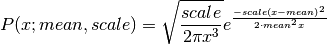
As noted above the Inverse Gaussian distribution first arise from attempts to model Brownian Motion. It is also a competitor to the Weibull for use in reliability modeling and modeling stock returns and interest rate processes.
References
[164] Brighton Webs Ltd., Wald Distribution, http://www.brighton-webs.co.uk/distributions/wald.asp [165] Chhikara, Raj S., and Folks, J. Leroy, “The Inverse Gaussian Distribution: Theory : Methodology, and Applications”, CRC Press, 1988. [166] Wikipedia, “Wald distribution” http://en.wikipedia.org/wiki/Wald_distribution Examples
Draw values from the distribution and plot the histogram:
>>> import matplotlib.pyplot as plt >>> h = plt.hist(np.random.wald(3, 2, 100000), bins=200, normed=True) >>> plt.show()
- pylayers.signal.EnergyDetector.weibull(a, size=None)¶
Weibull distribution.
Draw samples from a 1-parameter Weibull distribution with the given shape parameter a.
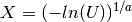
Here, U is drawn from the uniform distribution over (0,1].
The more common 2-parameter Weibull, including a scale parameter
is just 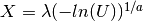.Parameters: a : float
Shape of the distribution.
size : tuple of ints
Output shape. If the given shape is, e.g., (m, n, k), then m * n * k samples are drawn.
See also
scipy.stats.distributions.weibull_max, scipy.stats.distributions.weibull_min, scipy.stats.distributions.genextreme, gumbel
Notes
The Weibull (or Type III asymptotic extreme value distribution for smallest values, SEV Type III, or Rosin-Rammler distribution) is one of a class of Generalized Extreme Value (GEV) distributions used in modeling extreme value problems. This class includes the Gumbel and Frechet distributions.
The probability density for the Weibull distribution is
where
is the shape and the scale.The function has its peak (the mode) at .
When a = 1, the Weibull distribution reduces to the exponential distribution.
References
[167] Waloddi Weibull, Professor, Royal Technical University, Stockholm, 1939 “A Statistical Theory Of The Strength Of Materials”, Ingeniorsvetenskapsakademiens Handlingar Nr 151, 1939, Generalstabens Litografiska Anstalts Forlag, Stockholm. [168] Waloddi Weibull, 1951 “A Statistical Distribution Function of Wide Applicability”, Journal Of Applied Mechanics ASME Paper. [169] Wikipedia, “Weibull distribution”, http://en.wikipedia.org/wiki/Weibull_distribution Examples
Draw samples from the distribution:
>>> a = 5. # shape >>> s = np.random.weibull(a, 1000)
Display the histogram of the samples, along with the probability density function:
>>> import matplotlib.pyplot as plt >>> x = np.arange(1,100.)/50. >>> def weib(x,n,a): ... return (a / n) * (x / n)**(a - 1) * np.exp(-(x / n)**a)
>>> count, bins, ignored = plt.hist(np.random.weibull(5.,1000)) >>> x = np.arange(1,100.)/50. >>> scale = count.max()/weib(x, 1., 5.).max() >>> plt.plot(x, weib(x, 1., 5.)*scale) >>> plt.show()
- pylayers.signal.EnergyDetector.zipf(a, size=None)¶
Draw samples from a Zipf distribution.
Samples are drawn from a Zipf distribution with specified parameter a > 1.
The Zipf distribution (also known as the zeta distribution) is a continuous probability distribution that satisfies Zipf’s law: the frequency of an item is inversely proportional to its rank in a frequency table.
Parameters: a : float > 1
Distribution parameter.
size : int or tuple of int, optional
Output shape. If the given shape is, e.g., (m, n, k), then m * n * k samples are drawn; a single integer is equivalent in its result to providing a mono-tuple, i.e., a 1-D array of length size is returned. The default is None, in which case a single scalar is returned.
Returns: samples : scalar or ndarray
The returned samples are greater than or equal to one.
See also
- scipy.stats.distributions.zipf
- probability density function, distribution, or cumulative density function, etc.
Notes
The probability density for the Zipf distribution is
where
 is the Riemann Zeta function.
is the Riemann Zeta function.It is named for the American linguist George Kingsley Zipf, who noted that the frequency of any word in a sample of a language is inversely proportional to its rank in the frequency table.
References
Zipf, G. K., Selected Studies of the Principle of Relative Frequency in Language, Cambridge, MA: Harvard Univ. Press, 1932.
Examples
Draw samples from the distribution:
>>> a = 2. # parameter >>> s = np.random.zipf(a, 1000)
Display the histogram of the samples, along with the probability density function:
>>> import matplotlib.pyplot as plt >>> import scipy.special as sps Truncate s values at 50 so plot is interesting >>> count, bins, ignored = plt.hist(s[s<50], 50, normed=True) >>> x = np.arange(1., 50.) >>> y = x**(-a)/sps.zetac(a) >>> plt.plot(x, y/max(y), linewidth=2, color='r') >>> plt.show()